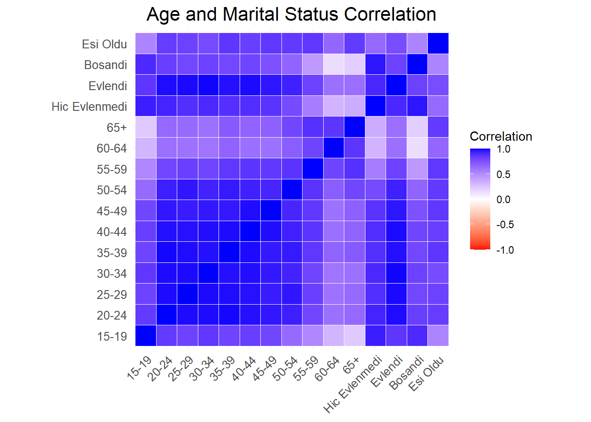

Proje, yaş grupları, eğitim durumu ve evlilik durumu verilerini içermektedir.
Kapsamı, verilerin yıllık ortalamalarının hesaplanması, veri keşfi, trend analizi ve model uygulama süreçlerini içerir.
2Veri
Proje kapsamında kullanılan veriler yaş grupları, eğitim durumu ve evlilik durumuyla ilgilidir.
Türkiye İstatistik Kurumu İşgücü İstatistikleri Veri Tabanı’ndan alınan veri setleri kullanılmıştır.
Veriler, yıllık ortalamalar şeklinde sunulmuştur.
“Yas_Grubu_VS.xlsx”, “Egitim_Durum_VS.xlsx”, “Evlilik_Durumu_VS.xlsx” dosyaları kullanılmıştır.
3Veri Hakkında Genel Bilgiler
Veriler, belirli zaman aralıklarında yaş grupları, eğitim durumu ve evlilik durumu üzerindeki istatistiksel bilgileri içerir.
Örnek olarak, yaş grupları verileri 15-19 yaş aralığından 65+ yaş aralığına kadar olan yıllık ortalama verileri içerir.
4Tercih Sebebi
Proje için bu verilerin seçilme sebebi, belirli demografik gruplar üzerindeki değişimleri ve ilişkileri anlamak amacıyla seçilmiştir.
Yaş grupları, eğitim durumu ve evlilik durumu verilerinin bir arada analiz edilmesi, geniş kapsamlı bir bakış açısı sağlar.
5Ön İşleme
Verilerin ön işleme adımları, gereksiz sütunların çıkarılması, sütun adlarının güncellenmesi ve yıllık ortalamaların hesaplanması gibi adımları içerir.
Model uygulama aşamasında, veriler üzerinde istatistiksel veya makine öğrenimi modelleri kullanılarak analizler ve tahminler gerçekleştirilir.
7.1 Eğitim Durumuna Göre Analiz
Bu kod, eğitim durumuna göre yıllık ortalama işsizlik oranlarını analiz etmek ve görselleştirmek için etkili bir yol sağlar.
Kütüphanelerin Yüklenmesi:
readxl, dplyr, tidyr, ggplot2 kütüphaneleri yüklenir. Veri Okuma ve Düzenleme:
read_excel fonksiyonu kullanılarak Egitim_Durum_VS.xlsx dosyasındaki veri okunur. İkinci sütun kaldırılır ve sütun adları güncellenir. Date sütunundan yıl bilgisi çıkarılarak Year sütunu eklenir.
Yıllık Ortalamaların Hesaplanması:
Her eğitim kategorisi için yıllık ortalamalar hesaplanır.
Verilerin Uzun Formatta Düzenlenmesi:
pivot_longer fonksiyonu kullanılarak veriler yeniden şekillendirilir. Bu adım, eğitim durumuna göre ortalama işsizlik oranlarını daha kolay görselleştirebilmek için gereklidir.
Görselleştirme:
ggplot2 kullanılarak yıllık ortalama işsizlik oranları, eğitim durumu ve yıl bazında görselleştirilir. Bar grafikler kullanılarak farklı eğitim durumları arasındaki işsizlik oranları karşılaştırılır. Grafikler estetik ve okunabilir olması için çeşitli temalar ve ayarlar eklenir.
library(readxl)library(dplyr)
Attaching package: 'dplyr'
The following objects are masked from 'package:stats':
filter, lag
The following objects are masked from 'package:base':
intersect, setdiff, setequal, union
library(tidyr)library(ggplot2)library(forcats)# Dosya yolunu düzenleyerek okuma işlemieducation_data <-read_excel("C:/Users/parad/Documents/GitHub/muy665-bahar2024-takim-kodlar-vadisi/portfolyo/Calisma2/Calisma2VeriSet/Egitim_Durum_VS.xlsx", skip =9)
New names:
• `` -> `...1`
• `` -> `...2`
# İkinci sütunu atlayarak verileri düzenlemeeducation_data <- education_data[,-2]# Sütun adlarını belirlemecolnames(education_data) <-c("Date", "Okuma_yazma_bilmeyen", "Okuma_yazma_bilen_fakat_bir_okul_bitirmeyen", "Ilkokul", "Ortaokul_veya_dengi_meslek_okul", "Genel_lise", "Lise_dengi_meslek_okul", "Yuksekokul_veya_fakulte", "Acik_Ogretim")# Yıl bilgisini Tarih sütunundan çıkarmaeducation_data$Year <-as.integer(sub(" .*", "", education_data$Date))# Her eğitim kategorisi için yıllık ortalamaları hesaplamayearly_education_averages <- education_data %>%group_by(Year) %>%summarise(across(`Okuma_yazma_bilmeyen`:`Acik_Ogretim`, mean, na.rm =TRUE))
Warning: There was 1 warning in `summarise()`.
ℹ In argument: `across(Okuma_yazma_bilmeyen:Acik_Ogretim, mean, na.rm = TRUE)`.
ℹ In group 1: `Year = 2005`.
Caused by warning:
! The `...` argument of `across()` is deprecated as of dplyr 1.1.0.
Supply arguments directly to `.fns` through an anonymous function instead.
# Previously
across(a:b, mean, na.rm = TRUE)
# Now
across(a:b, \(x) mean(x, na.rm = TRUE))
# Verileri yeniden şekillendirmeyearly_education_long <- yearly_education_averages %>%pivot_longer(cols =`Okuma_yazma_bilmeyen`:`Acik_Ogretim`, names_to ="Education_Status", values_to ="Average_Unemployment_Rate")# Eğitim durumu kategorilerini azalan sıraya göre yeniden sıralamayearly_education_long <- yearly_education_long %>%mutate(Education_Status =fct_reorder(Education_Status, -Average_Unemployment_Rate, .fun = mean))# Yıllık ortalama işsizlik oranlarını eğitim durumu ve yıl bazında görselleştirmeggplot(yearly_education_long, aes(x = Education_Status, y = Average_Unemployment_Rate, fill = Education_Status)) +geom_bar(stat ="identity", position =position_dodge()) +labs(title ="Yıllık Ortalama İşsizlik Oranları ve Eğitim Durumu", x ="Eğitim Durumu", y ="Ortalama İşsizlik Oranı (%)") +theme_minimal() +theme(axis.text.x =element_text(angle =45, hjust =1), legend.position ="bottom") +guides(fill =guide_legend(reverse =TRUE))
Grafikte, eğitim durumu ile yıllık ortalama işsizlik oranları arasındaki ilişki gösterilmektedir.
En yüksek işsizlik oranı, “Açık Öğretim” mezunlarında görülmektedir ve bu oran %20’nin üzerindedir.
Genel lise ve lise dengi meslek okulu mezunları yaklaşık %15 civarında işsizlik oranına sahiptir.
Okuma yazma bilen fakat bir okul bitirmeyen, ilkokul ve okuma yazma bilmeyenler ise %10’un altında işsizlik oranına sahiptir.
En düşük işsizlik oranı, “Okuma yazma bilmeyen” kategorisinde görülmektedir.
Bu veriler, eğitim düzeyinin işsizlik oranı üzerinde etkisi olduğunu ve açık öğretim mezunlarının diğer gruplara göre daha yüksek işsizlik oranına sahip olduğunu göstermektedir.
7.2 Evlilik Durumuna Göre Analiz
Excel dosyasından evlilik durumlarına ilişkin verileri okuyarak yıllık ortalama oranları hesaplar ve ardından bu oranları bir bar grafiğinde görselleştirir.
Gerekli kütüphaneleri yükleme: İlk olarak, R’de kullanacağınız bazı kütüphaneleri yüklüyorsunuz. Bu kütüphaneler veri işleme ve görselleştirme için kullanılır.
Excel dosyasından veri alma: Belirtilen Excel dosyasından verileri okuyorsunuz. Bu veriler, evlilik durumlarına ilişkin olabilir.
Veri setini düzenleme: Okunan veri setini düzenliyorsunuz. Örneğin, gereksiz sütunları çıkarıyorsunuz ve sütunlara anlamlı isimler veriyorsunuz.
Verileri analiz için hazırlama: Analiz yapmak için verileri hazırlıyorsunuz. Örneğin, tarih verisinden yıl bilgisini çıkararak analiz için kullanıma uygun hale getiriyorsunuz.
Ortalama hesaplama: Her yıl için evlilik durumu oranlarının ortalamasını hesaplıyorsunuz. Bu, yıllık evlilik trendlerini görmek için önemlidir.
Veriyi uzun formata dönüştürme: Veriyi görselleştirmek için uzun formata dönüştürüyorsunuz. Bu, veriyi daha iyi bir şekilde görselleştirmenize olanak tanır.
Veriyi görselleştirme: Son olarak, yıllık evlilik durumu oranlarını görselleştiriyorsunuz. Bu genellikle bar grafikleri kullanılarak yapılır ve trendleri daha açık bir şekilde gösterir.
# Gerekli kütüphaneleri yüklemelibrary(readxl)library(dplyr)library(tidyr)library(ggplot2)# Excel dosyasından veri almamarriage_data <-read_excel("C:/Users/parad/Documents/GitHub/muy665-bahar2024-takim-kodlar-vadisi/portfolyo/Calisma2/Calisma2VeriSet/Evlilik_Durumu_VS.xlsx", skip =9)
New names:
• `` -> `...1`
• `` -> `...2`
# İkinci sütunu çıkarmamarriage_data <- marriage_data[,-2]# Sütun adlarını belirlemecolnames(marriage_data) <-c("Date", "Hic_Evlenmedi", "Evlendi", "Bosandi", "Esi_Oldu")# Tarih sütunundan yılı çıkarmamarriage_data$Year <-as.integer(sub(" .*", "", marriage_data$Date))# Her evlilik durumu için yıllık ortalamaları hesaplamayearly_marriage_averages <- marriage_data %>%group_by(Year) %>%summarise(across(Hic_Evlenmedi:Esi_Oldu, mean, na.rm =TRUE))# Verileri grafik için uzun formata dönüştürmeyearly_marriage_long <- yearly_marriage_averages %>%pivot_longer(cols = Hic_Evlenmedi:Esi_Oldu, names_to ="Marital_Status", values_to ="Average_Rate")# Yıllık ortalama oranları yıl ve evlilik durumu bazında görselleştirmeggplot(yearly_marriage_long, aes(x =as.factor(Year), y = Average_Rate, fill = Marital_Status)) +geom_bar(stat ="identity", position =position_dodge()) +geom_text(aes(label =sprintf("%.1f", Average_Rate)), position =position_dodge(width =0.9), vjust =-0.3, size =3) +labs(title ="Evlilik Durumuna Göre Yıllık Ortalama Oranlar", x ="Yıl", y ="Ortalama Oran (%)") +theme_minimal() +theme(axis.text.x =element_text(angle =45, hjust =1), legend.position ="bottom")
Bu grafikte yıllara göre evlilik durumuna göre işsizlik oranları gösterilmektedir. Grafikte dört farklı medeni durum kategorisi vardır: Boşandı, Eşi Öldü, Evli, Hiç Evlenmedi.
Boşandı kategorisinde işsizlik oranları genel olarak diğer kategorilere kıyasla en yüksek seviyede ve sürekli olarak %20 civarındadır. 2009 yılında %25.1 ile en yüksek seviyeye ulaşmıştır.
Eşi Öldü kategorisinde işsizlik oranları en düşük seviyededir ve genellikle %5-8 arasında değişmektedir. Bu kategori yıllar içinde küçük dalgalanmalar göstermektedir.
Evli kategorisinde işsizlik oranları genellikle %5-7 arasında seyretmekte ve diğer kategorilere göre daha az dalgalanma göstermektedir.
Hiç Evlenmedi kategorisinde işsizlik oranları oldukça yüksektir ve %18-24 arasında değişmektedir. Bu oran 2009 yılında %24.4 ile en yüksek seviyesine ulaşmıştır.
Bu veriler, boşanmış kişilerin diğer medeni durumlardaki kişilere göre daha yüksek işsizlik oranlarına sahip olduğunu ve evlilerin işsizlik oranlarının genellikle daha düşük olduğunu göstermektedir. Hiç evlenmemiş kişilerin işsizlik oranları ise genel olarak yüksek seyretmektedir.
7.3 Yaş Grubuna Göre Analiz
TÜİK’in kullandığı uluslararası standarda göre istihdam edilmeyen, son üç ayda iş aramış olan ve 15 gün içinde bir işte istihdam edilebilecek durumda olan kişiler işsiz olarak sınıflandırılıyor ve oran bu sayıya göre hesaplanıyor. Özetle 15 yaşından büyük olup da son üç ay içinde iş arayan ve 15 gün içinde işbaşı yapmaya hazır olduğunu bildirenlerin toplam işgücüne bölünmesiyle işsizlik oranı hesaplanıyor.
Excel dosyasından işsizlik verilerini okur, her yaş grubu için ortalama işsizlik oranını hesaplar ve ggplot2 kullanarak her yaş grubu için ortalama işsizlik oranlarını çizer.
library(readxl)# Load the data, assuming the file path is correct and the sheet is named appropriately# Ensure to replace with the actual path and type it directly hereunemployment_data <-read_excel("C:\\Users\\parad\\Documents\\GitHub\\muy665-bahar2024-takim-kodlar-vadisi\\portfolyo\\Calisma2\\Calisma2VeriSet\\Yas_Grubu_VS.xlsx", skip =9)
New names:
• `` -> `...1`
• `` -> `...2`
unemployment_data <- unemployment_data[,-2] # This drops the second column# Adjust path and skip rows as necessary# Set column names, assuming they represent age groups directlycolnames(unemployment_data) <-c("Date", "15-19", "20-24", "25-29", "30-34", "35-39", "40-44", "45-49", "50-54", "55-59", "60-64", "65+")library(ggplot2)library(dplyr)library(tidyr)# Calculating the average unemployment rate for each age groupage_group_averages <- unemployment_data %>%select(-Date) %>%# Exclude the Date for calculationsummarise(across(everything(), mean, na.rm =TRUE)) %>%# Calculate mean, ignoring NA valuespivot_longer(cols =everything(),names_to ="Age_Group",values_to ="Average_Unemployment_Rate" )# Plotting the average unemployment rates for each age groupggplot(age_group_averages, aes(x = Age_Group, y = Average_Unemployment_Rate, fill = Age_Group)) +geom_bar(stat ="identity") +labs(title ="Yaş gruplarına göre Ortalama İşsizlik Oranı", x ="Yaş Grubu", y ="Ortalama İşsizlik Oranı") +theme_minimal() +theme(axis.text.x =element_text(angle =45, hjust =1))
Bu grafikte yaş gruplarına göre ortalama işsizlik oranları gösterilmektedir.
En yüksek işsizlik oranı, %20’nin biraz üzerinde olan 20-24 yaş grubundadır.
İkinci en yüksek işsizlik oranı, %15’in biraz üzerinde olan 15-19 yaş grubundadır.
25-29 yaş grubu ise %15 civarında bir işsizlik oranına sahiptir.
30-34, 35-39, 40-44, 45-49 yaş gruplarında işsizlik oranları yaklaşık %10 civarındadır.
50-54 yaş grubunda işsizlik oranı biraz daha düşük, %7-8 civarındadır.
55-59 yaş grubu %5-6 civarında bir işsizlik oranına sahiptir.
60-64 yaş grubu ise %5 civarında bir işsizlik oranına sahiptir.
En düşük işsizlik oranı, %5’in altında olan 65+ yaş grubundadır.
Bu veriler, genç yaş gruplarının (özellikle 15-24 yaş aralığı) işsizlik oranlarının diğer yaş gruplarına göre daha yüksek olduğunu ve yaş ilerledikçe işsizlik oranlarının genellikle azaldığını göstermektedir.
7.4 Yıl Bazında Analiz
Excel dosyasından işsizlik verilerini okuyup yıllara göre yaş gruplarının ortalama işsizlik oranlarını hesaplar ve bu verileri çubuk grafikle görselleştirir.
İlk olarak, dplyr ve ggplot2 kütüphaneleri yüklenir. Ardından, belirtilen Excel dosyasından veriler okunur ve gereksiz ikinci sütun düşürülür. Sütun isimleri, yaş gruplarını doğrudan temsil ettiği varsayılarak ayarlanır. Tarih bilgisinden yıl bilgisi çıkarılır ve yeni bir “Year” (Yıl) sütunu oluşturulur. Her yıl için tüm yaş gruplarının ortalama işsizlik oranı hesaplanır. Son olarak, yıllara göre ortalama işsizlik oranları, çubuk grafik kullanılarak görselleştirilir. Görsel, her yılın ortalama işsizlik oranını gösterir ve çubukların renkleri yılları temsil eder. Bu şekilde, yıllara göre işsizlik oranlarının değişimini kolayca görebilirsiniz.
unemployment_data <- unemployment_data[,-2] # This drops the second column# Adjust path and skip rows as necessary# Set column names, assuming they represent age groups directlycolnames(unemployment_data) <-c("Date", "15-19", "20-24", "25-29", "30-34", "35-39", "40-44", "45-49", "50-54", "55-59", "60-64", "65+")# Extract the year as an integerunemployment_data$Year <-as.integer(sub(" .*", "", unemployment_data$Date))# Calculate the average unemployment rate for all age groups combined for each yearannual_averages <- unemployment_data %>%group_by(Year) %>%summarise(Average_Unemployment_Rate =mean(c_across(`15-19`:`65+`), na.rm =TRUE))# Plotting the average unemployment rates by year using a bar graphggplot(annual_averages, aes(x =as.factor(Year), y = Average_Unemployment_Rate, fill =as.factor(Year))) +geom_bar(stat ="identity", width =0.7) +# Using bars to represent the average ratesscale_fill_brewer(palette ="Paired") +# Optional: adds color using a color palettelabs(title ="Bütün Yaş gruplarının yıl bazında İşsizlik Oranı", x ="Yıl", y ="Ortalama İşsizlik Oranı (%)") +theme_minimal() +theme(axis.text.x =element_text(angle =45, hjust =1))
Bu grafikte, yıllara göre tüm yaş gruplarının ortalama işsizlik oranları gösterilmektedir.
2009 yılı en yüksek işsizlik oranına sahiptir ve yaklaşık %12 civarındadır.
2005, 2006, 2007 ve 2008 yıllarında işsizlik oranları %10 civarında olup, 2008’den 2009’a doğru belirgin bir artış görülmektedir.
2010 ve 2011 yıllarında işsizlik oranları düşmeye başlar ve %10’un biraz altına geriler.
2012 ve 2013 yıllarında işsizlik oranları daha da düşerek yaklaşık %8 civarında seyreder.
2014 yılında işsizlik oranı tekrar artarak %10’a yaklaşır.
Bu veriler, 2009 yılında işsizlik oranlarının en yüksek seviyede olduğunu ve ardından kademeli olarak düştüğünü, ancak 2014 yılında yeniden bir artış yaşandığını göstermektedir. 2009’daki yüksek işsizlik oranı, muhtemelen küresel ekonomik krizden kaynaklanmaktadır.
8Sonuçlar
Dört grafik birlikte incelendiğinde, Türkiye’de 2005-2014 yılları arasında işsizlik oranlarının eğitim durumu, medeni durum ve yaş gruplarına göre dağılımı hakkında bazı önemli sonuçlar elde edilebilir.
1.Eğitim Durumu ve İşsizlik Oranı:
Açık Öğretim mezunları en yüksek işsizlik oranına sahiptir (%20’nin üzerinde). Genel lise ve lise dengi meslek okulu mezunları %15 civarında işsizlik oranına sahiptir. Okuma yazma bilmeyenlerin işsizlik oranı en düşük seviyededir (%10’un altında).
2.Medeni Durum ve İşsizlik Oranı:
Boşanmış bireyler, diğer medeni durumlara göre en yüksek işsizlik oranına sahiptir (yaklaşık %20). Evli bireylerin işsizlik oranı genellikle %5-7 arasında seyretmektedir. Hiç evlenmemiş bireylerin işsizlik oranı yüksek (%18-24 arasında). Eşi ölmüş bireylerin işsizlik oranı en düşüktür (%5-8 arasında).
3.Yaş Grupları ve İşsizlik Oranı:
20-24 yaş grubunda işsizlik oranı en yüksek seviyededir (%20’nin biraz üzerinde). 15-19 yaş grubunda işsizlik oranı da yüksektir (%15’in üzerinde). Yaş ilerledikçe işsizlik oranları genel olarak azalmaktadır, 65+ yaş grubunda en düşük seviyededir (%5’in altında).
4.Yıllara Göre Genel İşsizlik Oranı:
2009 yılında işsizlik oranı en yüksek seviyededir (yaklaşık %12), muhtemelen küresel ekonomik kriz etkisiyle. 2009’dan sonra işsizlik oranları düşmeye başlar ve 2012-2013 yıllarında en düşük seviyelerine iner (%8 civarında). 2014 yılında işsizlik oranı tekrar artarak %10’a yaklaşır.
Bu bulgular, işsizlik oranlarının eğitim, medeni durum ve yaş gruplarına göre değişiklik gösterdiğini ve ekonomik dalgalanmalardan etkilendiğini göstermektedir. Özellikle genç yaş grupları ve boşanmış bireyler yüksek işsizlik oranlarına sahipken, yaşlı bireyler ve evliler daha düşük işsizlik oranlarına sahiptir. Eğitim durumu da önemli bir faktördür; düşük eğitim seviyesine sahip bireylerin işsizlik oranları genellikle daha yüksektir.
The following object is masked from 'package:tidyr':
smiths
# Load age group dataage_data <-read_excel("C:\\Users\\parad\\Documents\\GitHub\\muy665-bahar2024-takim-kodlar-vadisi\\portfolyo\\Calisma2\\Calisma2VeriSet\\Yas_Grubu_VS.xlsx", skip =9)
New names:
• `` -> `...1`
• `` -> `...2`
age_data <- age_data[,-2] # Remove the second columncolnames(age_data) <-c("Date", "15-19", "20-24", "25-29", "30-34", "35-39", "40-44", "45-49", "50-54", "55-59", "60-64", "65+")# Extract the year and calculate yearly averagesage_data$Year <-as.integer(sub(" .*", "", age_data$Date))yearly_age_averages <- age_data %>%group_by(Year) %>%summarise(across(`15-19`:`65+`, mean, na.rm =TRUE))# Clean up the workspacerm(age_data)# Load education status dataeducation_data <-read_excel("C:\\Users\\parad\\Documents\\GitHub\\muy665-bahar2024-takim-kodlar-vadisi\\portfolyo\\Calisma2\\Calisma2VeriSet\\Egitim_Durum_VS.xlsx", skip =9)
New names:
• `` -> `...1`
• `` -> `...2`
education_data <- education_data[,-2] # Remove the second columncolnames(education_data) <-c("Date", "Okuma-yazma bilmeyen", "Okuma yazma bilen fakat bir okul bitirmeyen", "Ilkokul", "Ortaokul veya dengi meslek okul", "Genel lise", "Lise dengi meslek okul", "Yuksekokul veya fakulte", "Acik Ogretim")# Extract the year and calculate yearly averageseducation_data$Year <-as.integer(sub(" .*", "", education_data$Date))yearly_education_averages <- education_data %>%group_by(Year) %>%summarise(across(`Okuma-yazma bilmeyen`:`Acik Ogretim`, mean, na.rm =TRUE))# Clean up the workspacerm(education_data)# Load marital status datamarital_data <-read_excel("C:\\Users\\parad\\Documents\\GitHub\\muy665-bahar2024-takim-kodlar-vadisi\\portfolyo\\Calisma2\\Calisma2VeriSet\\Evlilik_Durumu_VS.xlsx", skip =9)
New names:
• `` -> `...1`
• `` -> `...2`
marital_data <- marital_data[,-2] # Remove the second columncolnames(marital_data) <-c("Date", "Hic Evlenmedi", "Evlendi", "Bosandi", "Esi Oldu")# Extract the year and calculate yearly averagesmarital_data$Year <-as.integer(sub(" .*", "", marital_data$Date))yearly_marriage_averages <- marital_data %>%group_by(Year) %>%summarise(across(`Hic Evlenmedi`:`Esi Oldu`, mean, na.rm =TRUE))# Clean up the workspacerm(marital_data)# Combine the data sets by 'Year'combined_data <-full_join(yearly_age_averages, yearly_education_averages, by ="Year") %>%full_join(yearly_marriage_averages, by ="Year")# Select age and marital status columns and calculate correlationsage_marital_correlation <-cor(combined_data[grepl("15-19|20-24|25-29|30-34|35-39|40-44|45-49|50-54|55-59|60-64|65+|Hic Evlenmedi|Evlendi|Bosandi|Esi Oldu", names(combined_data))], use ="complete.obs")# Select age and education status columns and calculate correlationsage_education_correlation <-cor(combined_data[grepl("15-19|20-24|25-29|30-34|35-39|40-44|45-49|50-54|55-59|60-64|65+|Okuma-yazma bilmeyen|Okuma yazma bilen fakat bir okul bitirmeyen|Ilkokul|Ortaokul veya dengi meslek okul|Genel lise|Lise dengi meslek okul|Yuksekokul veya fakulte|Acik Ogretim", names(combined_data))], use ="complete.obs")# Select marital and education status columns and calculate correlationsmarital_education_correlation <-cor(combined_data[grepl("Hic Evlenmedi|Evlendi|Bosandi|Esi Oldu|Okuma-yazma bilmeyen|Okuma yazma bilen fakat bir okul bitirmeyen|Ilkokul|Ortaokul veya dengi meslek okul|Genel lise|Lise dengi meslek okul|Yuksekokul veya fakulte|Acik Ogretim", names(combined_data))], use ="complete.obs")# Function to plot correlation heatmapsplot_correlation_heatmap <-function(correlation_matrix, title) { corr_melt <-melt(correlation_matrix)ggplot(corr_melt, aes(Var1, Var2, fill = value)) +geom_tile(color ="white") +# Add a border to tilesscale_fill_gradient2(low ="red", high ="blue", mid ="white",midpoint =0, limit =c(-1, 1), space ="Lab",name ="Correlation") +theme_minimal() +theme(axis.text.x =element_text(angle =45, vjust =1, size =10, hjust =1),axis.text.y =element_text(size =10), # Increase y-axis text sizeaxis.title.x =element_blank(), axis.title.y =element_blank(),plot.title =element_text(hjust =0.5, size =16)) +# Increase title sizecoord_fixed() +ggtitle(title)}# Visualize age and marital status correlationsplot_correlation_heatmap(age_marital_correlation, "Age and Marital Status Correlation")

# Visualize age and education status correlationsplot_correlation_heatmap(age_education_correlation, "Age and Education Status Correlation")
# Visualize marital and education status correlationsplot_correlation_heatmap(marital_education_correlation, "Marital and Education Status Correlation")
1.Yaş ve Evlilik Durumu Korelasyonu:
Genç yaş grupları (15-24) genellikle evlenmemiştir.
İleri yaş grupları (55+) evli olma eğilimindedir.
Orta yaş gruplarında (40-49) boşanma oranı nispeten yüksektir.
2.Yaş ve Eğitim Durumu Korelasyonu:
Genç yaş grupları (15-24) daha düşük eğitim seviyelerine sahiptir.
İleri yaş grupları (55+) daha düşük eğitim seviyelerine sahiptir.
Orta yaş grupları (30-39) yüksek eğitim seviyelerine sahiptir.
3.Evlilik ve Eğitim Durumu Korelasyonu:
Düşük eğitim seviyesine sahip kişiler evlenmemiş olma eğilimindedir.
Yüksek eğitim seviyesine sahip kişiler evli olma eğilimindedir.
Orta eğitim seviyesine sahip kişilerde boşanma oranı hafifçe yüksektir.
Bu grafikler, yaş, evlilik durumu ve eğitim seviyesi arasındaki ilişkileri anlamamıza yardımcı olur. Yaş ilerledikçe eğitim seviyesinin ve evlilik durumunun nasıl değiştiği, eğitim seviyesi arttıkça evlilik durumunun nasıl etkilendiği gibi konulara dair genel bir fikir verir.